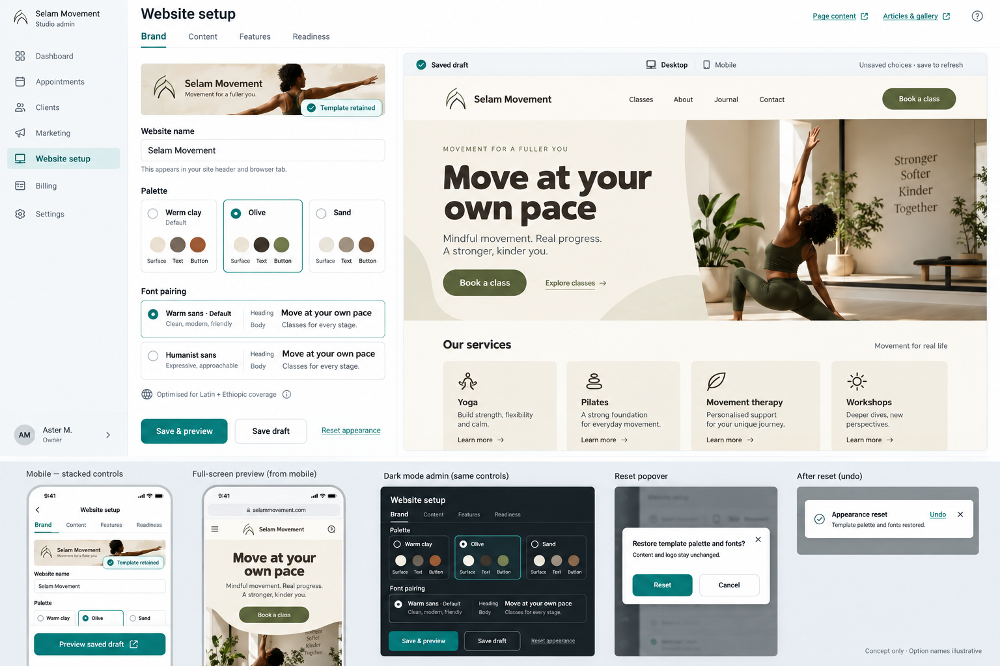
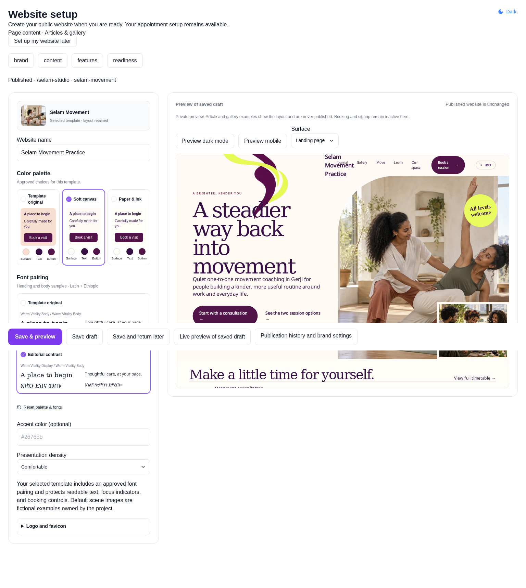

Selected exploration

Option B: appearance controls left, saved website preview right. Template colors and fonts remain authoritative.


Refinements: template summary, named palette cards, Latin/Ethiopic font samples, custom selectors, saved-draft status and sticky save actions. Mobile opens a separate preview dialog.